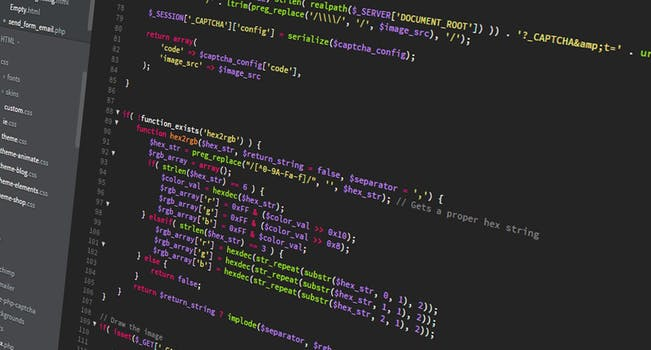

Hvordan forløber en SCRUM?


Hvilke roller er der i SCRUM?
Der er 3 definerede af Scrum roller i Scrum, 'Product Owner', 'Development Team' og 'Scrum master'
Product owner
Personens job er at repræsentere kunden og lave roadmaps, backlogs and af maksimere værdien teamet har for forretningen.
Deres fokus ligger på forretningsdelen af projektet, og kan ikke kombineres med Scrum Masterens job. Product Owneren skal have fuld fokus på at kommunikere med stemmer udefra, og kunden.
Rollen er det samme som en Kunde Repræsentant i andre rolle systemer. Det er vigtigt at kunne kommunikerer, af have empati og at kunne putte sig selv i andres øjne.
Development team
Development Teamet er ansvarlig for at aflevere potentielle shipping produkter vær sprint.
Teamet består af 3 til 9 medlemmer, der laver alle opgaver nødvendig for at bygge produktet (herunder analyse, design, testing og teknisk skrift).
Scrum master
Scrum Masterens job er at overse Scrum, han eller hun sørger for at teamets færdiggøre produktets opgaver og mål. De er ikke en traditionel teamleder eller project manager, men et buffer mellem teamet og distraherende influencer.
De sørger for at frameworket for Scrum bliver fulgt, for at de aftalte processer bliver gjort og giver opmuntring til at teamet forbedrer sig.
Hvilke værktøjer kan vi bruge til at arbejde med SCRUM?
Der kan bruges mange værktøjer, så som JIRA, Taiga, Trello og ZenHub m.m.JIRA; er et problems tracking program. Det giver både bug tracking, issue tracking og project management funktioner.
Taiga; er et gratis open-source project management system for nybegyndere, Agile developers og designere.
Trello er en webbaseret project management application.
Zenhub er en udgivelse til Github, der giver et Scrum overblik.